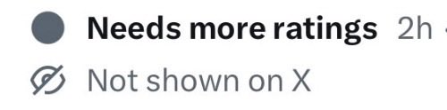

サイバー環状線
@CyberKanjousen
@HWatson2007 「Not shown on X」
这个社群附注应该是仅对少部分人可见的。

Helmholtz W.
@HWatson2007
@CyberKanjousen 这条推文并没有Community Note。
而且这条推文本身不构成美国联邦法律意义上的犯罪威胁。
美国宪法第一修正案保护政治言论。 主张某种刑罚（包括主张恢复死刑、扩大死刑适用范围）属于政治观点，只要不是煽动即时暴力或构成真正的威胁（true threat），通常受到第一修正案保护。 https://t.co/LcTGnHPhGc